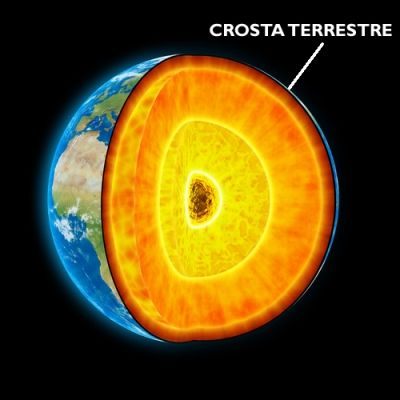

A Crosta Terrestre
A Crosta Terrestre é a camada superficial e mais fina da geosfera. Dependendo da região, pode medir de 5 km a 30 km. É formada por continentes e pelo fundo dos oceanos. Sendo assim, podemos dividi-la em duas subcamadas: a camada Sima (também conhecida como crosta oceânica) e a camada Sial (também conhecida como crosta continental).
É importante destacar que crosta terrestre não é o mesmo que placas tectônicas. Existem 12 placas tectônicas na formação continental atual da Terra. As placas flutuam sobre o magma pastoso e pelo formato geoide do Planeta, se encontram muitas vezes. O deslocamento resulta das forças que provêm do núcleo terrestre.
Esquema da crosta terrestre. Fonte: Desconhecido.
A camada Sima (oceânica) tem como domínio de composição o basalto, minerais silício e magnésio. Ela cobre 60% da superfície do planeta e tem pelo menos 180 milhões de anos. Já a camada Sial (continental) é formada por sedimentos de rochas, granitos, silício e alumínio. Cobre 40% da superfície terrestre e tem pelo menos 2 bilhões de anos.